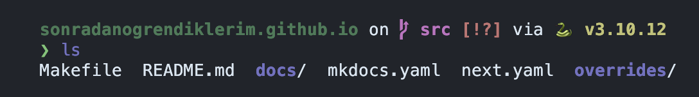

Terminali Güzelleştirelim
Ön Tanımlı Ayarlar¶
Önceki bölümde gördüğümüz terminal sadece kendisine kadar konfigürasyon içeriyor. Dilerseniz bu şekilde de kullanabilirsiniz ancak ben bu şekilde kullanmayı tercih etmiyorum.

Zamanımızın neredeyse tamamı bu uygulama içerisinde geçeceğinden olabildiğince rahat edebileceğim şekilde ayarlamayı tercih ediyorum. Bu bölümde shell nedir, bash yerine fish nasıl kullanılır ve fish ayarları nasıl yapılır göreceğiz.
Shell¶
Buna bir çeşit farklı bir kullanıcı arayüzü diyebiliriz. Şu anda ekranda gördüğünüz bir grafik arayüzü. Bilgisayarınızla grafik arayüzü ile işlem yapıyorsunuz ve grafik arayüzünün size tanıdığı olanaklar ne ise onunla sınırlısınız. Dosya kopyalama, düzenleme, silme gibi işlemleri sizden istenilen şekilde yapmak durumundasınız. Windows, OS X gibi kullanıcı arayüzlerini burada örnek gösterebiliriz.
Arayüzler sadece grafik ile sınırlı değil. Metin tabanlı arayüzler de bunlardan bir tanesi ve biz metin tabanlı arayüzler ile ilgileniyoruz. Hatırlarsanız metin tabanlı arayüzleri önceki bölümde görmüştük ve modern dünyada emüle ederek kullanıyorduk.
Bash¶
Ubuntu ile ön tanımlı olarak gelen metin tabanlı arayüz. Grafik arayüzünüz ile gnome-terminal
açtığınızda bu program, bir başka deyişle bu uygulama çalışır. Programı özellikle
belirtiyorum çünkü bu Firefox veya LibreOffice gibi bir program. Sadece metin tabanlı olarak
çalışmakta.
Her uygulama gibi bunun da bir konfigürasyon dosyası mevcut. Uygulama başlangıçta bu dosyayı okuyup çalışmasına devam ediyor. Bu konfiglürasyon dosyasını şimdilik göremiyorsunuz çünkü gizli :)
Linux ve Benzeri Sistemlerde Gizli Dosyalar¶
Aslında değil tabii ki. Linux ve benzeri sistemlerde gizli dosyalar nokta karakteri ile başlar ve ön tanımlı olarak dosya yöneticilerinde gösterilmezler. Terminalinize aşağıdaki komutları yazın ve aradaki farkı görün:
ls komutuna verdiğiniz -a parametresi bütün dosyaları görmek istediğinizi söyler.
Bu komutunun hangi parametrelerini alacağını da ls --help komutu ile öğrenebilirsiniz. Bir göz
atmanızda fayda var.
Bash Konfigürasyonu¶
Bahsettiğimiz konfigürasyon dosyasının ismi .bashrc. Bunu herhangi bir editör ile açarak
inceleyebilirsiniz. Bash yerine fish kullanacağımız için içerisinde yazanları anlamlandırmamıza
gerek yok. Göz atmanız yeterli. Bu dosyanın içeriğini aşağıdaki komut ile görebilirsiniz:
cat komutu sonrasında gelen herhangi bir dosyanın içeriğini ekrana basacaktır.
Fish¶
Artık metin tabanlı arayüz kullanacağımız için ekran görüntülerine gnome-terminal gibi arayüzleri
eklemeyeceğiz. Şu anda terminalimiz şu şekilde görünmekte:

Bu belgenin sonunda terminalimiz bir git reposu dizinine girdiğinizde aşağıdaki şekilde görünecek:

Artık tekrar etmeye gerek yok ancak yine de tekrar edelim. Fish de bash gibi bir arayüz ve bir uygulama. Sadece bazı noktalarda avantajları ve dezavantajları var. Ben bash yerine fish kullanmayı tercih ediyorum çünkü ön tanımlı ayarları ve konfigürasyonu bana daha uygun geliyor.
Avantajlarından bahsederken dezavantajlarından bahsetmemek olmaz. Fish kullandığınızda bash için yazılmış komutlarda hatalarla karşılaşabilirsiniz. Tek bir komut ile yüklenen uygulamalar genellikle bash ile yazıldığı için bu noktada sorunla karşılaşacaksınız ancak bunu da fish değil bash ile çalıştır diyerek çözülebiliyor. Bu ileri bir konu, fish ve bash scriptlerinin farklarını bilmemize şimdilik ihtiyacımız yok.
Bash ve Fish ile birlikte Zsh de en çok tercih edilen uygulamalar arasında. Tercihinizi bu yönde de yapabilirsiniz ancak kişisel olarak Fish kullandığım için belgede bundan bahsediyoruz.
Fish Yükleyelim¶
Terminalde aşağıdaki komutu çalıştırın:
Sudo komutu
Buradaki sudo komutu, sonrasında gelen her şeyi yetkili kullanıcı ile çalıştırmayı sağlar.
Bir uygulama yüklerken şu an olduğu gibi yetkisiz bir kullanıcı ile yüklemeye çalıştığımızda
belirli dizinlere erişim sağlanamayacağından uygulama da yüklenemeyecektir.
Bu örnekte alacağımız hata aşağıdakine benzer olacaktır: